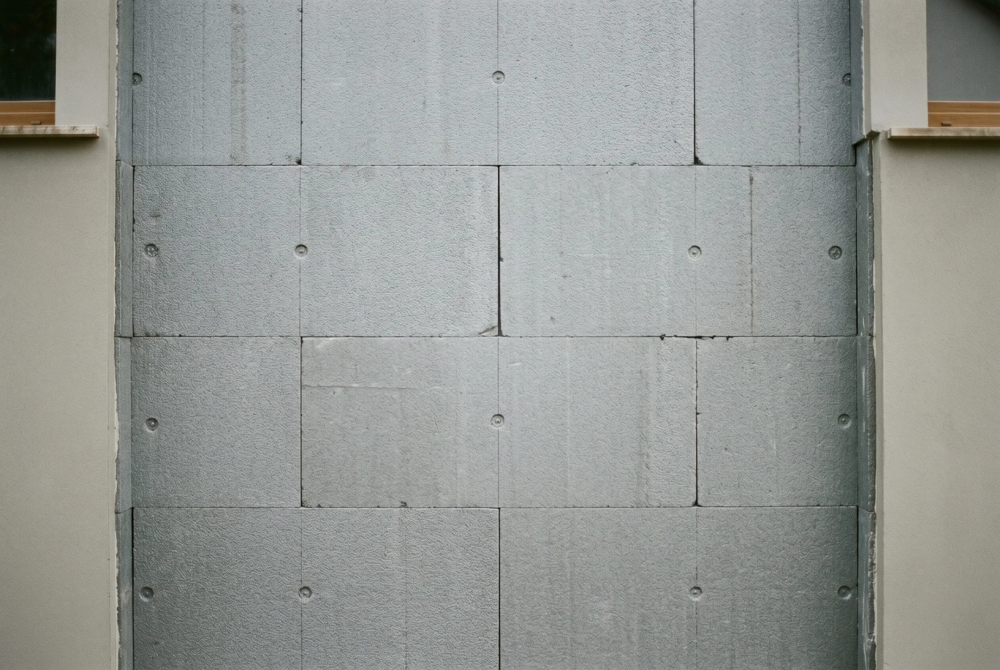
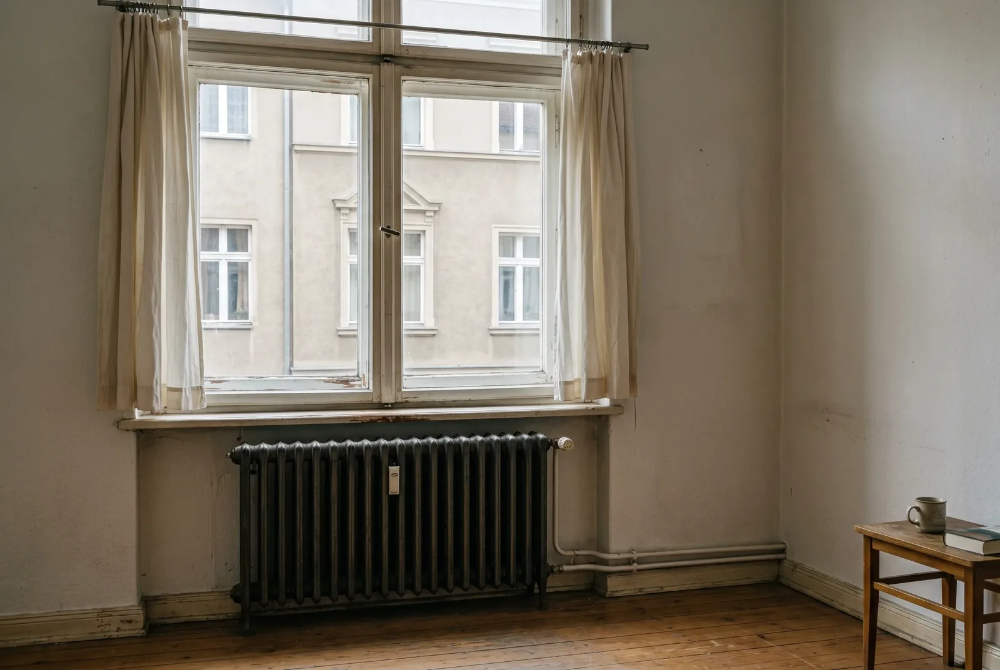

Inhaltsverzeichnis
Das Wichtigste in Kürze
- Reihenfolge ist gebäudeabhängig: Bei Häusern vor 1978 mit Energieklasse F oder G dämmen Sie zuerst; ab Baujahr 1984 mit Klasse D oder E ist der sofortige Wärmepumpen-Einbau mit schrittweiser Dämmung sinnvoll.
- Keine Fußbodenheizung nötig: Entscheidend ist die Vorlauftemperatur, nicht die Flächenheizung — mit hydraulischem Abgleich kommen viele Bestandsheizkörper bei 50 bis 55 Grad aus.
- Vorlauftemperatur steuert die Effizienz: Jede Absenkung um 10 Grad hebt die Jahresarbeitszahl um rund 0,5 Punkte; gedämmt sind 3,5 und mehr realistisch statt 2,8 bis 3,0 im unsanierten Zustand.
- Kosten und Förderung: Die Wärmepumpe kostet meist 12.000 bis 20.000 Euro, gefördert für Förderanträge ab dem 21. Juli 2026 mit bis zu 80 Prozent; günstige Dämmung von Keller- und oberster Geschossdecke spart schon 15 bis 25 Prozent Heizwärmebedarf.
- Pflicht statt Kür: Heizlastberechnung und hydraulischer Abgleich sind bei jeder Strategie die Grundlage einer wirtschaftlichen Anlage — sonst droht eine überdimensionierte, taktende Wärmepumpe.
Stand der Angaben (12. Juli 2026): Bundestag und Bundesrat haben am 10. Juli 2026 das neue Gebäudemodernisierungsgesetz (GModG) beschlossen, und die reformierten KfW-Förderbedingungen gelten laut BMWE und KfW für neue Anträge ab dem 21. Juli 2026. Das Gesetz ist jedoch noch nicht verkündet und die geänderte Förderrichtlinie noch nicht im Bundesanzeiger veröffentlicht – alle Zahlen geben den aktuellen Stand des Wissens wieder, ohne Gewähr. Die Förderung steht außerdem unter dem Vorbehalt verfügbarer Bundesmittel; ein Rechtsanspruch besteht nicht. Welche Konditionen für Ihr Vorhaben konkret gelten, prüfen wir gern tagesaktuell für Sie.
Was hier verglichen wird — und warum die Reihenfolge mehr Geld kostet als gedacht
Die alte Gasheizung läuft noch, aber die nächste Reparatur steht bevor — und im Kopf vieler Eigentümer kreist dieselbe Frage: Erst die Fassade dämmen und dann eine moderne Heizung einbauen, oder die Wärmepumpe jetzt sofort, die Dämmung später? Eine Wärmepumpe für den Altbau ohne Fußbodenheizung gilt vielen als riskant, dabei liegt das eigentliche Risiko meist nicht in der Technik, sondern in der falschen Reihenfolge der Maßnahmen.
Genau hier setzen wir an. Anders als die meisten Ratgeber, die nur fragen, ob eine Wärmepumpe ohne Flächenheizung überhaupt funktioniert, vergleichen wir zwei konkrete Sanierungsstrategien gegeneinander. Auf der einen Seite steht der sofortige Einbau der Wärmepumpe mit anschließender, schrittweiser Dämmung. Auf der anderen Seite die klassische Reihenfolge: erst die Gebäudehülle ertüchtigen, dann die Heizung. Beide Wege führen zum Ziel — aber sie unterscheiden sich deutlich bei Investitionshöhe, Effizienz und Förderung.
Die Antwort, welcher Weg der richtige ist, hängt fast vollständig vom Gebäudetyp ab. Baujahr, energetischer Zustand und die Größe der vorhandenen Heizkörper geben die Richtung vor. Ein Haus von 1965 mit ungedämmten Außenwänden braucht eine andere Strategie als ein Reihenhaus von 1992. Wer das ignoriert und einfach loslegt, riskiert eine überdimensionierte Anlage, verschenkte Fördergelder oder enttäuschende Heizkosten. In den folgenden Abschnitten ordnen wir beide Strategien ein und geben Ihnen eine klare Entscheidungsmatrix an die Hand.
Gut zu wissen: Der schnellste Eignungstest ist der sogenannte 55-Grad-Test: Stellen Sie die Vorlauftemperatur Ihrer bestehenden Heizung an einem kalten Tag auf 55 Grad. Werden alle Räume warm, ist Ihr Haus ohne weitere Dämmung für eine Luft-Wasser-Wärmepumpe tauglich. Für eine Luft-Luft-Wärmepumpe, die die Räume direkt über Innengeräte beheizt, spielt der Test keine Rolle.
Kurzprofil der zwei Strategien
Bevor wir die Strategien Punkt für Punkt vergleichen, lohnt sich ein klarer Blick darauf, was sie konkret bedeuten — und für welche Häuser sie typischerweise gedacht sind. Die Wahl entscheidet sich weniger an einer pauschalen Regel als an Baujahr und energetischem Zustand Ihres Gebäudes.
Strategie 1: Wärmepumpe sofort, Dämmung schrittweise
Bei dieser Strategie wird die Wärmepumpe zuerst installiert, die Dämmung von Dach, Fassade und Fenstern folgt über die nächsten Jahre. Der große Vorteil: Sie ersetzen Ihre fossile Heizung sofort, sichern sich die aktuelle Förderung und senken von Beginn an den CO2-Ausstoß. Die Anlage wird dabei auf den künftigen, nach der geplanten Dämmung erwarteten Wärmebedarf ausgelegt. Die Übergangszeit mit höherem Bedarf überbrückt der integrierte Heizstab. Sinnvoll ist dieser Weg vor allem bei Gebäuden ab Baujahr 1984 und Energieklasse D oder E, deren Hülle bereits einen Grundzustand mitbringt.
Strategie 2: Erst dämmen, dann Wärmepumpe
Hier wird zuerst die Gebäudehülle ertüchtigt, anschließend die Heizung getauscht. Der Grund ist technisch eindeutig: Nach der Dämmung lässt sich die benötigte Heizleistung korrekt berechnen. Eine Anlage, die für ein ungedämmtes Haus ausgelegt wurde, läuft nach der Dämmung im Teillastbetrieb und verliert an Effizienz. Diese Reihenfolge empfehlen wir besonders bei Gebäuden vor Baujahr 1978 mit Energieklasse F oder G, deren Wärmeverluste so hoch sind, dass eine Wärmepumpe ohne Vordämmung unwirtschaftlich liefe.
Gut zu wissen: Die günstigsten Dämmmaßnahmen mit dem besten Verhältnis von Kosten zu Wirkung sind die Kellerdecke und die oberste Geschossdecke. Beide zusammen kosten oft 3.000 bis 6.500 Euro und senken den Heizwärmebedarf um 15 bis 25 Prozent — ohne Gerüst und ohne lange Bauphase.
Vergleich nach Kriterien
Welche Strategie sich rechnet, zeigt sich erst im direkten Vergleich der entscheidenden Faktoren. Wir betrachten vier Dimensionen: die Kosten, die Effizienz, die Förderung und die Risiken. Gerade beim Einsatz einer Wärmepumpe im Altbau ohne Flächenheizung machen diese Punkte den Unterschied zwischen einer wirtschaftlichen und einer enttäuschenden Anlage aus.
Kosten: Investition und Betrieb
Die reine Wärmepumpe kostet im Einfamilienhaus meist zwischen 12.000 und 20.000 Euro inklusive Einbau. Dämmmaßnahmen kommen je nach Umfang hinzu — von 3.000 Euro für Kellerdecke und oberste Geschossdecke bis zu 25.000 Euro und mehr für eine komplette Fassadendämmung. Bei Strategie 1 verteilen Sie diese Kosten über mehrere Jahre, bei Strategie 2 fallen sie gebündelt zu Beginn an. Entscheidend für die Betriebskosten ist die Effizienz: Eine gut auf das gedämmte Gebäude abgestimmte Anlage spart über die Lebensdauer mehrere tausend Euro gegenüber einer überdimensionierten.
Effizienz: Wie Dämmung die Wärmepumpe besser macht
Der zentrale Hebel ist die Vorlauftemperatur. Jede Senkung um 10 Grad hebt die Jahresarbeitszahl um rund 0,5 Punkte. Ein ungedämmtes Haus braucht hohe Vorlauftemperaturen, eine gedämmte Hülle kommt mit niedrigeren aus. In der Praxis erreichen Luft-Wasser-Wärmepumpen in unsanierten Altbauten mit Heizkörpern Jahresarbeitszahlen um 2,8 bis 3,0; nach gezielter Dämmung sind 3,5 und mehr realistisch. Der Fraunhofer-ISE-Feldtest bestätigt: Auch in unsanierten und teilsanierten Bestandsgebäuden laufen Wärmepumpen mit Heizkörpern im Schnitt bei einer Jahresarbeitszahl um 3,4 — vorausgesetzt, die Heizkörper sind groß genug.

Förderung: Die Reihenfolge beeinflusst die Höhe
Die Wärmepumpe wird für Förderanträge ab dem 21. Juli 2026 über die KfW mit 30 Prozent Grundförderung gefördert, ergänzt um 16 Prozent Klimageschwindigkeitsbonus (sinkt erstmals zum 1. Februar 2027 und danach halbjährlich um je 4 Prozentpunkte) sowie einen dreistufigen Einkommensbonus von 40, 30 oder 10 Prozent (bei einem zu versteuernden Haushaltsjahreseinkommen bis 30.000, 40.000 beziehungsweise 50.000 Euro; lebt mindestens ein minderjähriges Kind im Haushalt, sinkt das anzusetzende Einkommen um einmalig 10.000 Euro) — kombinierbar, aber bei maximal 80 Prozent gedeckelt. Der frühere Effizienzbonus von 5 Prozent für Geräte mit natürlichem Kältemittel wie R290 entfällt; solche Geräte bleiben technisch die richtige Wahl, bringen aber keinen Förderaufschlag mehr. Förderfähig sind bis zu 28.000 Euro für die erste Wohneinheit (sinkt erstmals zum 1. Februar 2027 schrittweise), der maximale Zuschuss liegt damit bei 22.400 Euro. Dämmmaßnahmen laufen separat über die BAFA mit 15 Prozent. Wer vorab einen individuellen Sanierungsfahrplan erstellen lässt, erhält auf die BAFA-geförderten Dämmmaßnahmen zusätzlich 5 Prozentpunkte iSFP-Bonus — nicht auf die Wärmepumpe selbst. Genau diese Planung macht Strategie 2 finanziell oft attraktiver, weil sie Dämmung und Heizungstausch sinnvoll verzahnt und die volle Bonusstruktur ausschöpft.
Erst dämmen — und dabei die sinkende Heizungsförderung verpassen?
Diese Sorge treibt gerade viele Eigentümer um, und sie verdient eine ehrliche Antwort. Ja, die Degression belohnt einen frühen Heizungstausch: Wer den Förderantrag bis zum 31. Januar 2027 stellt, erhält im Standardfall 46 Prozent (30 Prozent Grundförderung plus 16 Prozent Klimageschwindigkeitsbonus) auf bis zu 28.000 Euro förderfähige Kosten, also bis zu 12.880 Euro Zuschuss. Ab dem 1. Februar 2027 sinkt der Satz auf 42 Prozent bei 27.250 Euro Deckel (11.445 Euro), ab dem 1. August 2027 auf 38 Prozent bei 26.500 Euro (10.070 Euro). Einkommens- und Familienboni kommen unverändert hinzu, wo die Voraussetzungen erfüllt sind.
Aber — und das ist der entscheidende Punkt: Eine falsche Reihenfolge kostet oft mehr als eine Degressionsstufe. Wer nur wegen des Stichtags eine Wärmepumpe auf das ungedämmte Haus auslegt und danach dämmt, bekommt eine überdimensionierte, taktende Anlage mit schlechter Jahresarbeitszahl — und zahlt den Fehler über Jahre in Form höherer Stromkosten und schnelleren Verschleißes. Die 1.435 Euro Zuschuss-Differenz zwischen den ersten beiden Stufen sind schnell aufgezehrt, wenn die Anlage dauerhaft ineffizient läuft.
Der Ausweg ist kein Entweder-oder, sondern ein Etappenplan mit klarer Terminierung: schnelle, günstige Dämmschritte wie Kellerdecke und oberste Geschossdecke zuerst, den Heizungstausch bewusst vor eine der Degressionsstufen gelegt — sauber ausgelegt auf den dann erreichten Zustand. Wo die alte Heizung noch durchhält, kann auch eine Hybridlösung als Brücke dienen, bis die Hülle so weit ist. Und ein beruhigender Fakt zum Schluss: Die Dämmförderung läuft über die BAFA mit 15 Prozent plus 5 Prozentpunkten iSFP-Bonus — sie ist von der Degression der Heizungsförderung nicht betroffen. Wer zuerst dämmt, verliert bei der Dämmung selbst also nichts.
Der dritte Weg, wenn Luft-Wasser am unsanierten Haus scheitert: Scheitert eine Luft-Wasser-Wärmepumpe an der hohen Vorlauftemperatur des ungedämmten Hauses, ist die Luft-Luft-Wärmepumpe (Multisplit) oft der Weg, jetzt zu wechseln, ohne erst komplett zu dämmen: Sie gibt die Wärme direkt über Innengeräte in den Raum ab und braucht keinen Hochtemperatur-Wasserkreis – der 55-Grad-Test entscheidet hier also nicht über die Machbarkeit. Gefördert wird sie über KfW 458 wie jede andere Wärmepumpe, sofern das Gerät in der BAFA-Liste förderfähiger Wärmepumpen steht und als Heizung dient; Warmwasser wird separat gelöst, etwa über eine Brauchwasser-Wärmepumpe. Die Dämmung bleibt trotzdem sinnvoll, denn sie senkt den Verbrauch jeder Heizung – sie diktiert dann aber nicht mehr den Zeitpunkt des Heizungstauschs.
Risiken: Was bei falscher Reihenfolge schiefgeht
Das größte Risiko ist eine überdimensionierte Anlage. Wird die Wärmepumpe für das ungedämmte Haus ausgelegt und später gedämmt, taktet sie zu häufig, verschleißt schneller und verliert an Effizienz. Umgekehrt droht bei zu hohem Wärmebedarf ohne Vordämmung ein Dauerbetrieb mit hoher Vorlauftemperatur und entsprechend hohen Stromkosten. In beiden Fällen gilt: Eine fundierte Heizlastberechnung und ein hydraulischer Abgleich sind nicht optional, sondern die Grundlage jeder wirtschaftlichen Lösung.
Sanierungsfahrplan mit Förder-Timing: Wir rechnen beide Wege durch
EffiNova ermittelt anhand von Baujahr, Zustand und Heizlast die richtige Reihenfolge — und terminiert den Heizungstausch so, dass Sie keine Förderstufe unnötig verschenken.
Kostenlose ErsteinschätzungEntscheidungsmatrix — welche Strategie passt für Ihren Altbau?
Statt einer pauschalen Faustregel hilft eine Einordnung nach Baujahr und energetischem Zustand. Die folgende Matrix fasst zusammen, welche Reihenfolge sich für welchen Gebäudetyp bewährt hat. Sie ersetzt keine individuelle Beratung, gibt Ihnen aber eine belastbare erste Orientierung.
| Baujahr / Energieklasse | Empfohlene Strategie | Begründung |
|---|---|---|
| Vor 1978, Klasse F/G | Erst dämmen | Sehr hohe Wärmeverluste — ohne Vordämmung läuft die Wärmepumpe unwirtschaftlich |
| 1978–1995, Klasse D/E | Wärmepumpe + schrittweise Dämmung oder Hybrid | Solider Grundzustand; Auslegung auf künftigen Bedarf möglich |
| Nach 1995, Klasse C/D | Wärmepumpe sofort | Gute Hülle, niedrige Vorlauftemperaturen meist ohne Zusatzmaßnahmen erreichbar |
| Ölheizung kurz vor Ausfall | Wärmepumpe sofort + Dämmplan parallel | Versorgungssicherheit hat Vorrang; Dämmung folgt nach iSFP |
Für Häuser vor 1978 mit den schlechtesten Energieklassen ist die Sache meist klar: Erst sorgt die Dämmung dafür, dass der Wärmebedarf in einen Bereich sinkt, in dem die Wärmepumpe effizient arbeitet. Bei Gebäuden der mittleren Baualtersklasse ist der direkte Einbau mit kluger Auslegung auf den späteren, gedämmten Zustand der pragmatischere Weg. Häuser ab Mitte der Neunziger bringen oft schon alles mit, was es braucht. Und wenn die alte Ölheizung kurz vor dem Aus steht, hat die Versorgungssicherheit Vorrang — dann installieren wir die Wärmepumpe sofort und legen den Dämmplan parallel an.
Unser Tipp: Bevor Sie sich festlegen, lohnt der Blick auf die Grundsatzfrage. In unserem Hauptartikel erfahren Sie, ob sich eine Wärmepumpe im Altbau überhaupt lohnt und welche Voraussetzungen Ihr Gebäude mitbringen sollte.
Unser Tipp: Ob Ihr Haus ohne Vordämmung bereits wärmepumpentauglich ist, klären Sie schnell mit unserem Beitrag Selbstcheck zur Wärmepumpen-Eignung im Altbau — inklusive 55-Grad-Test und Checkliste zum Durchgehen.
Fazit — und wie wir beides koordinieren
Die ehrliche Empfehlung lautet: Bei Altbauten vor 1978 mit schlechter Energiebilanz führt fast immer der Weg über die Dämmung zuerst. Bei jüngeren Gebäuden mit solidem Grundzustand spricht dagegen viel für den sofortigen Einbau der Wärmepumpe, klug ausgelegt auf den künftigen Bedarf. Was bei beiden Strategien gilt: Ohne saubere Heizlastberechnung und hydraulischen Abgleich bleibt jede Anlage hinter ihren Möglichkeiten zurück. Diese Schritte sind die Pflicht, nicht die Kür – die raumweise Heizlastberechnung fertigen wir bei EffiNova an und prüfen auch Ihr Angebot vor der Unterschrift auf Förderfähigkeit.
Der Vorteil, wenn alles aus einer Hand kommt: Dämmung, Heizungstausch und Förderanträge greifen ineinander, statt sich gegenseitig auszubremsen. Wir bei EffiNova planen die Reihenfolge so, dass Sie die volle Förderung ausschöpfen, die Wärmepumpe optimal dimensioniert wird und kein Schritt den nächsten blockiert. So wird aus einer Reihe von Einzelmaßnahmen ein stimmiger Sanierungsfahrplan, der zu Ihrem Haus und Ihrem Budget passt.
Unser Tipp: Wie sich die Reihenfolge konkret auf Ihre Förderhöhe auswirkt, lesen Sie Schritt für Schritt in unserem Beitrag zum Beantragen der Wärmepumpen-Förderung im Altbau. Die Antragstellung übernehmen wir auf Wunsch komplett für Sie.
Gut zu wissen: Für die KfW-Förderung muss die Wärmepumpe eine rechnerisch ermittelte Jahresarbeitszahl von mindestens 3,0 erreichen — nachzuweisen in der Planung (nach VDI 4650), nicht erst im späteren Betrieb. Im unsanierten Altbau gelingt das nur mit gezielter Auslegung — ein weiterer Grund, Dämmung und Heizungsauslegung gemeinsam zu denken.

Häufige Fragen
Ist eine Wärmepumpe ohne Fußbodenheizung im Altbau sinnvoll?
Ja. Eine fehlende Flächenheizung ist kein Ausschlusskriterium. Entscheidend ist die Vorlauftemperatur, mit der Ihre Heizkörper auskommen. Fraunhofer-Feldtests belegen Jahresarbeitszahlen von 3,0 bis 3,5 in Altbauten mit Heizkörpern, sofern der hydraulische Abgleich stimmt und die Heizflächen ausreichend groß sind. Eine Wärmepumpe für den Altbau ohne Fußbodenheizung arbeitet damit zuverlässig und wirtschaftlich.
Welche Wärmepumpe eignet sich für einen Altbau ohne Fußbodenheizung?
Wer die vorhandenen Heizkörper weiter nutzen will, fährt meist mit einer Luft-Wasser-Wärmepumpe mit dem Kältemittel R290 (Propan) gut: Diese Geräte erreichen Vorlauftemperaturen bis 70 bis 75 Grad und arbeiten auch mit Bestandsheizkörpern zuverlässig. Eine Alternative ist die Luft-Luft-Wärmepumpe (Multisplit): Sie beheizt die Räume direkt über Innengeräte, braucht gar keinen Wasserkreis und wird über KfW 458 zu denselben Sätzen gefördert, sofern das Gerät in der BAFA-Liste förderfähiger Wärmepumpen steht – Warmwasser wird dann separat gelöst. Erdwärmepumpen sind effizienter, durch die nötige Bohrung aber deutlich teurer und nicht auf jedem Grundstück umsetzbar.
Kann man eine Wärmepumpe mit normalen Heizkörpern betreiben?
Ja. Mit hydraulischem Abgleich und angepasster Heizkurve funktionieren viele Bestandsheizkörper bei 50 bis 55 Grad Vorlauftemperatur problemlos. Ein vollständiger Tausch ist selten nötig. Lediglich einzelne unterdimensionierte Räume müssen gegebenenfalls mit größeren oder Niedertemperatur-Heizkörpern nachgerüstet werden.
In welchen Häusern scheitert die Wärmepumpe?
Problematisch wird es für eine Luft-Wasser-Wärmepumpe, wenn der Heizwärmebedarf — als grobe Orientierung — über 150 bis 200 Kilowattstunden pro Quadratmeter und Jahr liegt und die Heizkörper auch bei 55 Grad Vorlauf einzelne Räume nicht warm bekommen. In solchen Fällen ist eine vorherige Teildämmung — etwa von Dach und Kellerdecke — die wirtschaftlichere Grundlage, bevor die Wärmepumpe einzieht. Alternativ ermöglicht eine Luft-Luft-Wärmepumpe den sofortigen Wechsel: Sie beheizt die Räume direkt über Innengeräte, braucht keinen Hochtemperatur-Wasserkreis und wird genauso gefördert.
Was kostet eine Wärmepumpe für ein Einfamilienhaus ohne Fußbodenheizung?
Die Investition liegt meist zwischen 12.000 und 20.000 Euro inklusive Einbau. Bei der maximalen Förderquote von bis zu 80 Prozent (für Förderanträge ab dem 21. Juli 2026) kann der Eigenanteil auf rund 2.400 bis 4.000 Euro sinken; beim Standardsatz von 46 Prozent aus Grund- und Klimageschwindigkeitsbonus liegt er bei rund 6.500 bis 10.800 Euro. Hinzu kommen je nach Aufwand der hydraulische Abgleich und mögliche Anpassungen an einzelnen Heizkörpern.
Verliere ich Förderung, wenn ich zuerst dämme?
Bei der Dämmung selbst nicht: Die BAFA-Förderung für Dämmmaßnahmen (15 Prozent, plus 5 Prozentpunkte iSFP-Bonus) ist von der Reform der Heizungsförderung unabhängig und kennt keine Degressionsstufen. Bei der späteren Heizungsförderung kann sich Warten dagegen auswirken: Ab dem 1. Februar 2027 sinken der Klimageschwindigkeitsbonus halbjährlich um 4 Prozentpunkte und der Deckel der förderfähigen Kosten um je 750 Euro — im Standardfall schrumpft der maximale Zuschuss von 12.880 Euro auf 11.445 Euro ab Februar 2027 und 10.070 Euro ab August 2027. Die Grundförderung von 30 Prozent sowie Einkommens- und Familienboni bleiben bestehen. Genau deshalb gehört das Timing des Heizungstauschs in den Sanierungsfahrplan: Wer zuerst dämmt, legt den Heizungstausch möglichst vor die nächste Degressionsstufe.